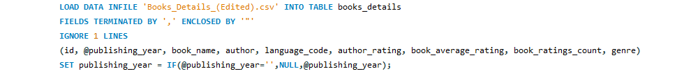
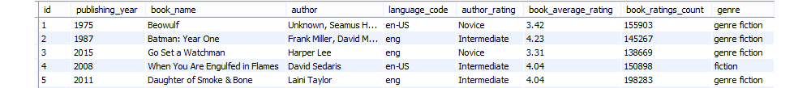
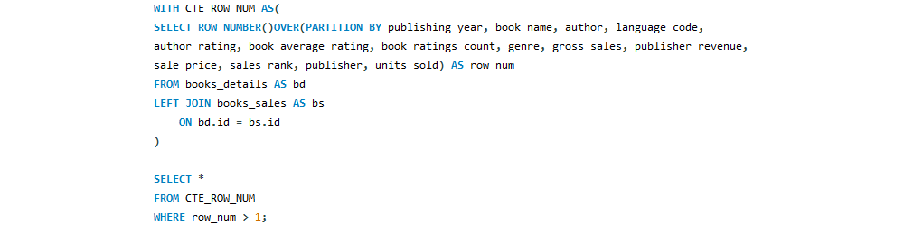
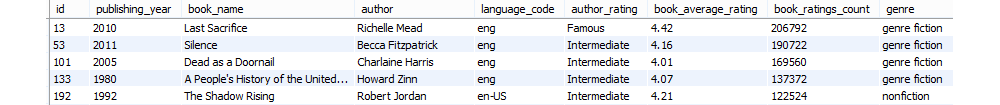
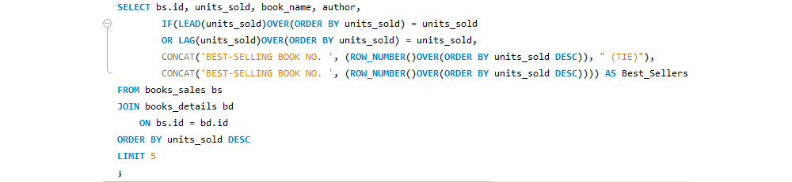

[SQL] Análisis de ventas y ratings de libros
Este artículo explica cómo se llevó a cabo el proyecto
y habla acerca de las herramientas utilizadas.

¿De qué se trata el proyecto?
En este proyecto utilizo SQL para analizar datos acerca de ventas de libros, sus calificaciones y sus géneros, con el objetivo de ofrecer recomendaciones relevantes para un autor que busca publicar un libro y aumentar las posibilidades de que este alcance el éxito comercial.
Elementos del proyecto
JOINS, CTEs, Window Functions, Aggregate Functions, Subqueries, String Functions, DDL, DML, Limpieza de datos, Análisis de datos, Observaciones, Recomendaciones.
Los datos
Para este proyecto utilicé una base de datos con información clave y relevante acerca de ventas de libros y sus calificaciones. Otras columnas incluyen diversos aspectos como el año de publicación, detalles acerca de los autores o el género de cada libro.
Cómo se llevó a cabo el proyecto
El proyecto se divide en 4 partes principalmente:
- Importar y cargar los datos
- Limpieza y estandarización de los datos
- Análisis y exploración de los datos utilizando queries
- Recomendaciones y observaciones finales para el cliente
1. IMPORTAR Y CARGAR LOS DATOS
Los datos se encontraban originalmente en formato .csv. A continuación describo el proceso que seguí para poder cargar los datos en MySQL y trabajar con las tablas:
Lo primero fue crear una base de datos para poder importar la información:
Esta base de datos contiene dos tablas, cada una con su propia información. Para trabajar con los datos, primero creé la primera tabla, dándole un nombre y un tipo a cada columna.
Se creó una tabla vacía:
Importé los datos utilizando LOAD DATA INFILE:

Ahora la información se encuentra correctamente importada dentro de la tabla:

Creé la segunda tabla para importar los datos. Para ello seguí el mismo proceso:
Posteriormente cargué los datos utilizando LOAD DATA INFILE:
La segunda tabla está lista:
Ahora que tenemos ambas tablas con su respectiva información, podemos proceder a limpiar y estandarizar los datos.
2. LIMPIEZA Y ESTANDARIZACIÓN DE LOS DATOS
Muchas bases de datos suelen presentar errores en su información. En este caso, la mayor parte de la base de datos que utilicé no contenía errores, sin embargo, después de analizarla más a fondo, logré encontrar algunas inconsistencias que decidí corregir. Aquí está el proceso que seguí:
Verificar que ambas tablas contengan el mismo número de filas:
Tras ejecutar ambas queries, el resultado que obtenemos es el mismo, esto nos permite concluir que ambas tablas tienen el mismo número de filas y que podremos continuar trabajando con esta base de datos.
Buscando valores duplicados:
Ahora es necesario identificar cualquier valor duplicado. Para ello, aplicamos un JOIN a ambas tablas y utilizamos la función ROW_NUMBER dentro de una CTE.

Después de filtrar los datos con la query, no se muestra ningún resultado, lo que significa que nuestra base de datos no contiene valores duplicados.
Espacios al principio y al final de los títulos de los libros:
Utilizamos el operador LIKE y la wildcard % para filtrar los datos e identificar cualquier espacio al principio a al final de cada título.
Parece ser que existen varios resultados con este problema:

Editamos dichos resultados utilizando TRIM y UPDATE:
Errores en campos importantes
La columna “genre” será una de las más útiles para nuestro análisis, por lo que resulta importante revisarla para descartar cualquier inconsistencia. Revisemos los valores con un DISTINCT:
Parece ser que el género “fiction” se repite 2 veces innecesariamente, pero con un nombre de categoría distinto. Es importante modificar esa parte:
Usamos un UPDATE para combinar ambas categorías y conservar sólo una:
Tras ejecutar esta query, ahora sólo se muestran 3 categorías, justo como queríamos:
Al revisar la segunda tabla, me doy cuenta de que dos elementos de la columna “publisher” deberían estar combinados también (HarperCollins Publishers and HarperCollins Publishing)
Actualizamos los datos para combinar ambos resultados:
Se han combinado correctamente:
Valores null y valores en blanco
Es necesario asegurarnos de que en nuestras columnas importantes no existen valores nulos o valores en blanco:
Después de revisar todos los campos, me doy cuenta de que hay algunos valores faltantes en la columna “book_name”. Sin embargo, las columnas que utilizaremos para nuestro análisis son otras, por lo que dichos valores faltantes no tendrán repercusión alguna sobre nuestros resultados y conclusiones finales. Por esta razón, dejaremos esos valores tal y como están.
Las demás columnas y campos cruciales no presentan información faltante.
3. ANÁLISIS Y EXPLORACIÓN A TRAVÉS DE QUERIES
Ahora que concluimos con la limpieza y estandarización de nuestros datos, podemos continuar trabajando con ellos.
Existen diversas conclusiones que pueden ser obtenidas a partir del análisis de estos datos y que nos permitirán ofrecer recomendaciones relevantes para nuestro cliente o cualquier parte interesada.
Para este fin, escribí y ejecuté varias queries utilizando distintas funciones y declaraciones. Aquí muestro un resumen de las funciones y consultas más importantes que empleé:
- Género literario más popular
- Calificación máxima, mínima y promedio
- Calificaciones de acuerdo al precio de los libros
- Calificaciones de acuerdo al género literario
- Unidades vendidas en promedio para cada género literario
- Los 5 libros con más ventas de cualquier categoría
- Libros mejor calificados en cada género
- Unidades vendidas por cada editorial
Obtención del número total de libros para cada género, utilizando la aggregate function COUNT.
Utilicé MAX, MIN y AVG para analizar las calificaciones de los libros.
Uní ambas tablas con un JOIN y utilicé un CASE statement para determinar si el precio de los libros tiene alguna influencia sobre su calificación.
Agrupé según el género literario para determinar cuál género recibe las mejores calificaciones.
Utilicé un JOIN para unir ambas tablas y agruparlas por género, esto con la finalidad de averiguar cuántos libros logró vender cada género.
En este punto decidí escribir una query un poco más compleja con la finalidad de combinar la utilización de IF, window functions y string functions.

Utilicé la window function RANK para obtener el libro con mejor calificación de cada género.
Esta estadística resulta bastante útil, pues nuestro cliente/autor, puede utilizar dichos libros como ejemplo o referencia para publicar el suyo y ser bien recibido por la crítica.
Existen algunas editoriales que generan más ventas que otras. Esto podría influenciar el éxito comercial de alguien que busca publicar un libro.
4. RECOMENDACIONES Y OBSERVACIONES FINALES PARA EL CLIENTE
A partir del análisis descrito en este artículo fue posible obtener diversas conclusiones y ofrecer recomendaciones específicas para el caso de nuestro cliente y futuro autor:
- Ficción es el género más popular (mayor competencia)
- Un nuevo libro debe aspirar a una calificación mayor a 4 estrellas
- Los libros más caros también son los que tienen las mejores calificaciones
- Los libros infantiles tienen las mejores calificaciones
- En promedio, un libro infantil vende más unidades que un libro de ficción o de no-ficción
- El autor debería considerar Amazon Digital Services si lo que busca es alcanzar el éxito en ventas
El género que más se consume es el de ficción. Esto significa que la gente prefiere dicho género, sin embargo, también significa que existe una mayor competencia y será más difícil destacar entre tantas opciones.
La calificación promedio de un libro es de 4.007, por lo que si se busca que el libro destaque entre los demás, debe tener una calificación mayor a la del promedio.
Si el autor considera que su libro es un buen libro, puede tomar la decisión de venderlo a un precio más alto y obtendrá buena respuesta del público.
Es más fácil que un libro infantil sea bien recibido por el público y obtenga una calificación positiva por parte de los lectores.
La posibilidad de que tu libro alcance un número alto de ventas, se incrementa cuando se trata de un libro infantil.
Amazon Digital Services, Inc. presenta un número de ventas mucho mayor que el de las demás editoriales.